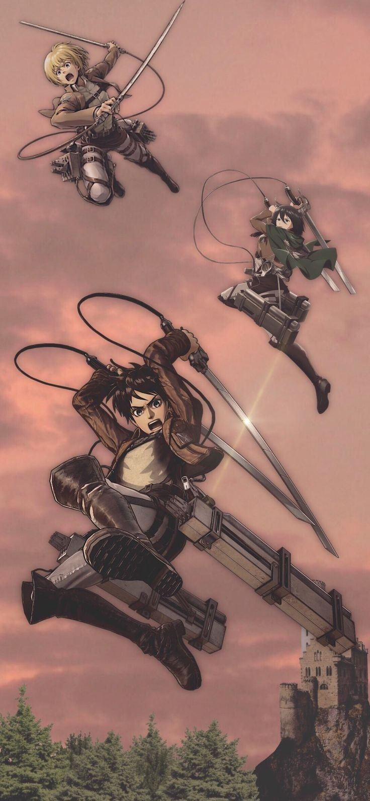

Attack on Titan (Shingeki no Kyojin)
Attack on Titan is a Japanese anime series based on Hajime Isayama's manga, animated first by WIT Studio and later by MAPPA. The story follows the last remnants of humanity, who survive behind enormous walls, sheltering from giant humanoid predators called Titans. The show ran for four seasons from 2013 to 2023 and became one of the most successful anime projects in the medium's history.
Key dates
- 2009 — Hajime Isayama publishes the first manga chapter
- April 2013 — Season 1 premieres (WIT Studio)
- April 2017 — Season 2 airs
- July 2018 — Season 3 begins
- December 2020 — The Final Season Part 1 airs
- November 2023 — The series finale (MAPPA) airs
Interesting facts
- The manga runs 139 chapters and is fully completed
- The animation studio switched from WIT to MAPPA after season 2
- The soundtrack was composed by Hiroyuki Sawano, which strongly shapes the show's atmosphere
- The series won the 2014 "Anime of the Year" award

Don't you want to know what's beyond that wall? — Eren Yeager, Attack on Titan
Trailer
Official trailer, embedded from YouTube.
Studios & Production
The anime was produced by two different studios over its run. WIT Studio animated seasons 1 through 3, giving the early seasons their gritty, hand-drawn feel and their acrobatic ODM gear choreography. Starting with The Final Season, production moved to MAPPA, which leaned into heavier use of 3D animation for large-scale Titan battles while keeping the character designs consistent with the earlier seasons.
Across both studios, composer Hiroyuki Sawano stayed on the project for the entire series, which is a big part of why the show's tone feels unified from season 1 to the finale despite the change in animation studio.
You can read more about the series on its official MyAnimeList page: MyAnimeList — Shingeki no Kyojin